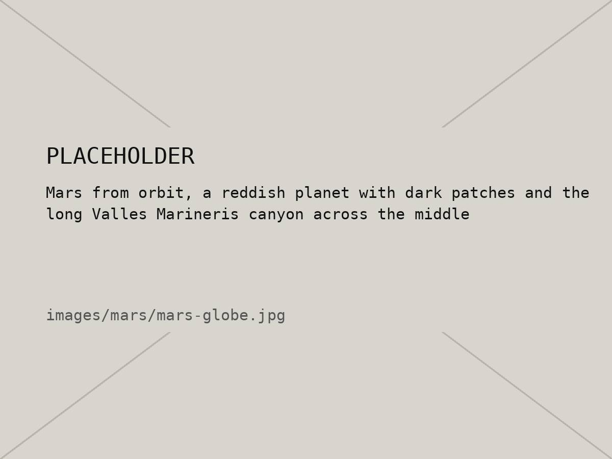
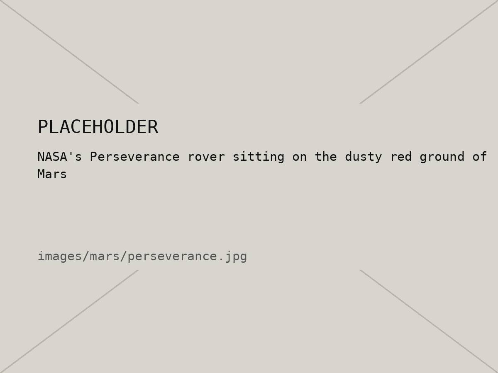

06 / 10 — Planet 4
Mars
Rusty, dusty, and the planet we've sent the most robots to.
01 — Intro
Mars is red because its dust is full of iron oxide, which is basically rust. It's about half the size of Earth and a lot colder, with a thin atmosphere that's mostly carbon dioxide.
It has some ridiculous landmarks. Olympus Mons is the tallest volcano in the solar system, and Valles Marineris is a canyon about as long as the United States is wide. There's also evidence that water used to flow there, which is a big reason rovers like Curiosity and Perseverance are driving around looking for signs of ancient life.
02 — Quick facts
| Distance from the Sun | About 228 million km (1.5 AU) |
|---|---|
| Diameter | 6,779 km (about half of Earth) |
| Length of a day | 24 h 37 min |
| Length of a year | 687 Earth days |
| Gravity | 38% of Earth's |
| Moons | 2 (Phobos and Deimos) |
| Tallest volcano | Olympus Mons, about 22 km high |
03 — Images


04 — Weight calculator
What would you weigh on Mars? Type in your weight on Earth.